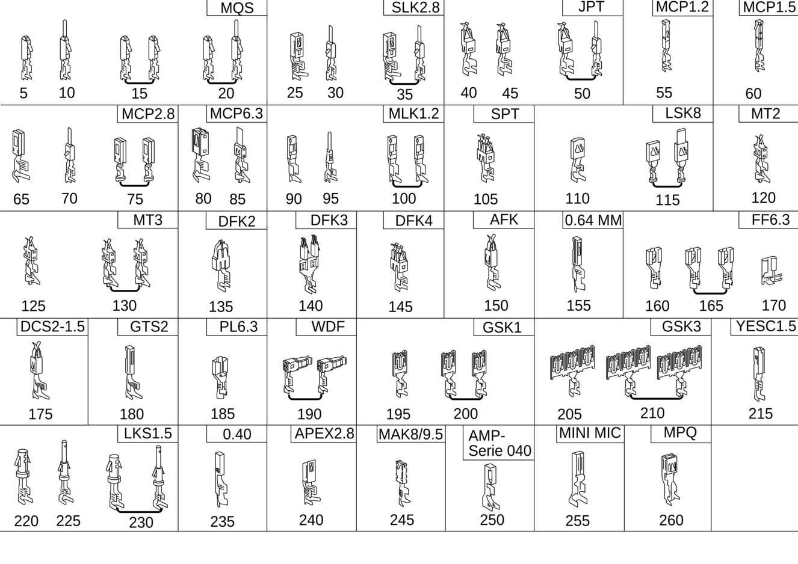

| № | Артикул | Название | Кол. | Примечание | Ограничение |
|---|---|---|---|---|---|
| 5 | A 018 545 38 26 | Пружинный шплинт (SPRING RETAINING PIN) | NB | 0.14\-0.22 MM2 MQS | |
| 5 | A 014 545 26 26 | Пружинный шплинт (SPRING RETAINING PIN) | NB | СЕРЕБРО, ПРИ УПЛОТНЕНИИ ОТДЕЛЬНОЙ ЖИЛЫ; 0.25\-0.35 MM2 MQS ELA | |
| 5 | A 019 545 34 26 | Контактная втулка (CONTACT SOCKET) | NB | ЗОЛОТИСТЫЙ; 0.25\-0.35 MM2 MQS CB | |
| 5 | A 019 545 48 26 | Штекерная втулка (RECEPTACLE) | NB | ЗОЛОТО И ГЕЛЬ,БЕЗ УПЛОТНЕНИЯ; 0.25\-0.35 MM2 MQS | |
| 5 | A 016 545 41 26 | Контактная втулка (CONTACT SOCKET) | NB | 0.25\-0.35 MM2 MQS | |
| 5 | A 013 545 44 26 | Контактная втулка (CONTACT SOCKET) | NB | Позолоченный; 0.5\-0.75 MM2 MQS | |
| 5 | A 008 545 63 26 | Контактная втулка (CONTACT SOCKET) | NB | ПРИ НАЛИЧИИ УПЛОТНИТЕЛЯ ОТДЕЛЬНЫХ ЖИЛ; 0.5\-0.75 MM2 MQS ELA | |
| 5 | A 019 545 36 26 | Контактная втулка (CONTACT SOCKET) | NB | ЗОЛОТИСТЫЙ; 0.5\-0.75 MM2 MQS CB | |
| 5 | A 013 545 46 26 | Контактная втулка (CONTACT SOCKET) | NB | ЗОЛОТО, ПРИ УПЛОТНЕНИИ ОТДЕЛЬНОЙ ЖИЛЫ; 0.5\-0.75 MM2 MQS ELA | |
| 5 | A 021 545 36 26 | Контактная втулка (CONTACT SOCKET) | NB | ЗОЛОТИСТЫЙ И ЖЕЛТЫЙ; 0.5\-0.75 MM2 MQS | |
| 5 | A 008 545 55 26 | Контактная втулка (CONTACT SOCKET) | NB | 0.5\-0.75 MM2 MQS | |
| 5 | A 002 982 22 26 | Контактная втулка (CONTACT SOCKET) | NB | 0.75\-1.5 MM2 MQS1.5CB | |
| 10 | A 050 545 73 28 | Штекерный штифт (PLUG PIN) | NB | 0.08\-0.14 MM2 MQS | |
| 10 | A 037 545 21 28 | Штекер (PLUG) | NB | ЗОЛОТИСТЫЙ; 0.25\-0.35 MM2 MQS | |
| 10 | A 041 545 28 28 | Штекер (PLUG) | NB | ЗОЛОТИСТЫЙ; 0.5\-0.75 MM2 MQS | |
| 10 | A 029 545 45 28 | Штекер (PLUG) | NB | ЗОЛОТО, ПРИ УПЛОТНЕНИИ ОТДЕЛЬНОЙ ЖИЛЫ; 0.5\-0.75 MM2 MQS | |
| 10 | A 032 545 39 28 | Вилочный обжимной контакт (CRIMP TML. PIN CONTACT) | NB | 0.5\-0.75 MM2 MQS | |
| 10 | A 034 545 65 28 | Вилочный обжимной контакт (CRIMP TML. PIN CONTACT) | NB | ПРИ НАЛИЧИИ УПЛОТНИТЕЛЯ ОТДЕЛЬНЫХ ЖИЛ; 0.5\-0.75 MM2 MQS | |
| 15 | A 000 540 25 05 | Электрический провод (ELECTRIC LINE) | NB | ЗОЛОТО, ПРИ УПЛОТНЕНИИ ОТДЕЛЬНОЙ ЖИЛЫ; 0.5 MM2 MQS | |
| 15 | A 000 540 48 05 | Электрический провод (ELECTRIC LINE) | NB | ЗОЛОТИСТЫЙ; 0.75 MM2 MQS AU | |
| 15 | A 000 540 26 05 | Электрический провод (ELECTRIC LINE) | NB | ЗОЛОТО, ПРИ УПЛОТНЕНИИ ОТДЕЛЬНОЙ ЖИЛЫ; 0.75 MM2 MQS | |
| 20 | A 000 540 45 05 | Электрический провод (ELECTRIC LINE) | NB | ЛУЖЁН.; 0.5 MM2 MQS SN | |
| 20 | A 000 540 47 05 | Электрический провод (ELECTRIC LINE) | NB | ЗОЛОТИСТЫЙ; 0.5 MM2 MQS | |
| 20 | A 000 540 23 05 | Электрический провод (ELECTRIC LINE) | NB | ЗОЛОТО, ПРИ УПЛОТНЕНИИ ОТДЕЛЬНОЙ ЖИЛЫ; 0.5 MM2 MQS | |
| 20 | A 001 540 94 05 | Электрический провод (ELECTRICAL LINE) | NB | ЗОЛОТО И ГЕЛЬ,БЕЗ УПЛОТНЕНИЯ; 0.5 MM2 MQS AU | |
| 20 | A 000 540 46 05 | Электрический провод (ELECTRIC LINE) | NB | ЛУЖЁН.; 0.75 MM2 MQS SN | |
| 20 | A 000 540 24 05 | Электрический провод (ELECTRIC LINE) | NB | СЕРЕБРО, ПРИ УПЛОТНЕНИИ ОТДЕЛЬНОЙ ЖИЛЫ; 0.75 MM2 MQS | |
| 25 | A 013 545 14 26 | Контактная пружина (SPRING RETAINING PIN) | NB | 0.22\-0.35 MM2 SLK2.8 | |
| 25 | A 013 545 15 26 | Контактная втулка (CONTACT SOCKET) | NB | 0.5\-0.75 MM2 SLK2.8 | |
| 25 | A 009 545 81 26 | Контактная втулка (CONTACT SOCKET) | NB | ПРИ НАЛИЧИИ УПЛОТНИТЕЛЯ ОТДЕЛЬНЫХ ЖИЛ; 0.5\-0.75 MM2 SLK2.8 | |
| 25 | A 013 545 16 26 | Контактная втулка (CONTACT SOCKET) | NB | 1.5\-2.5 MM2 SLK2.8 | |
| 25 | A 009 545 82 26 | Контактная втулка (CONTACT SOCKET) | NB | ПРИ НАЛИЧИИ УПЛОТНИТЕЛЯ ОТДЕЛЬНЫХ ЖИЛ; 1.5\-2.5 MM2 SLK2.8 | |
| 25 | A 011 545 06 26 | Контактная втулка | NB | 2.6\-4.0 MM2 SLK2.8 | |
| 25 | A 011 545 07 26 | Контактная втулка (CONTACT SOCKET) | NB | С посеребрением; 4.0 MM2 SLK2.8 | |
| 25 | A 016 545 56 26 | Пружинный шплинт (SPRING RETAINING PIN) | NB | ПРИ НАЛИЧИИ УПЛОТНИТЕЛЯ ОТДЕЛЬНЫХ ЖИЛ; 4.0 MM2 SLK2.8 ELA | |
| 30 | A 037 545 96 28 | Плоский штекер (MALE SPADE CONNECTOR) | NB | 0.22\-0.35 MM2 SLK2.8 | |
| 30 | A 035 545 62 28 | Корпус штекера (PLUG HOUSING) | NB | ПРИ НАЛИЧИИ УПЛОТНИТЕЛЯ ОТДЕЛЬНЫХ ЖИЛ; 0.22\-0.35 MM2 SLK2.8 ELA | |
| 30 | A 035 545 73 28 | Плоский штекер | NB | 0.5\-0.75 MM2 SLK2.8 | |
| 30 | A 046 545 40 28 | Штекер (PLUG) | NB | СЕРЕБРИСТЫЙ; 0.5\-0.75 MM2 SLK2.8 | |
| 30 | A 035 545 64 28 | Корпус штекера (PLUG HOUSING) | NB | ПРИ НАЛИЧИИ УПЛОТНИТЕЛЯ ОТДЕЛЬНЫХ ЖИЛ; 0.5\-0.75 MM2 SLK2.8 | |
| 30 | A 035 545 74 28 | Плоский штекер (MALE SPADE CONNECTOR) | NB | 1.5\-2.5 MM2 SLK2.8 | |
| 30 | A 035 545 66 28 | Плоский штекер (MALE SPADE CONNECTOR) | NB | ПРИ НАЛИЧИИ УПЛОТНИТЕЛЯ ОТДЕЛЬНЫХ ЖИЛ; 1.5\-2.5 MM2 SLK2.8 | |
| 30 | A 035 545 76 28 | Штекер (PLUG) | NB | 4.0 MM2 SLK2.8 | |
| 30 | A 035 545 68 28 | Штекер (PLUG) | NB | ПРИ НАЛИЧИИ УПЛОТНИТЕЛЯ ОТДЕЛЬНЫХ ЖИЛ; 4.0 MM2 SLK2.8 ELA | |
| 35 | A 000 540 38 05 | Электрический провод (ELECTRIC LINE) | NB | ПРИ НАЛИЧИИ УПЛОТНИТЕЛЯ ОТДЕЛЬНЫХ ЖИЛ; 0.75 MM2 SLK2.8 | |
| 35 | A 000 540 39 05 | Электрический провод (ELECTRICAL LINE) | NB | ПРИ НАЛИЧИИ УПЛОТНИТЕЛЯ ОТДЕЛЬНЫХ ЖИЛ; 1.5 MM2 SLK2.8 | |
| 35 | A 000 540 40 05 | Электрический провод (ELECTRIC LINE) | NB | ПРИ НАЛИЧИИ УПЛОТНИТЕЛЯ ОТДЕЛЬНЫХ ЖИЛ; 2.5 MM2 SLK2.8 | |
| 35 | A 000 540 41 05 | Электрический провод (ELECTRIC LINE) | NB | ПРИ НАЛИЧИИ УПЛОТНИТЕЛЯ ОТДЕЛЬНЫХ ЖИЛ; 4.0 MM2 SLK2.8 | |
| 40 | A 016 545 49 26 | Штекерная втулка (RECEPTACLE) | NB | 0.2\-0.5 MM2 JPT | |
| 40 | A 011 545 81 26 | Контактная пружина (SPRING RETAINING PIN) | NB | 0.5\-1.0 MM2 JPT | |
| 40 | A 000 540 46 15 | Контактная пружина (SPRING RETAINING PIN) | NB | ПРИ НАЛИЧИИ УПЛОТНИТЕЛЯ ОТДЕЛЬНЫХ ЖИЛ; 0.5\-1.0 MM2 JPT | |
| 40 | A 011 545 80 26 | Пружинный шплинт (SPRING RETAINING PIN) | NB | 1.5\-2.5 MM2 JPT2.8 | |
| 40 | A 011 545 76 26 | Контактная пружина (CONTACT SPRING) | NB | ПРИ НАЛИЧИИ УПЛОТНИТЕЛЯ ОТДЕЛЬНЫХ ЖИЛ; 1.5\-2.5 MM2 JPT | |
| 45 | A 002 982 90 26 | Контактная втулка (CONTACT SOCKET) | NB | 0.5\-1.0 MM2 JPT2.8 | |
| 45 | A 015 545 71 26 | Пружинный шплинт (SPRING RETAINING PIN) | NB | ПРИ НАЛИЧИИ УПЛОТНИТЕЛЯ ОТДЕЛЬНЫХ ЖИЛ; 0.5\-1.0 MM2 JPT2.8 ELA | |
| 45 | A 002 982 92 26 | Контактная втулка (CONTACT SOCKET) | NB | 1.5\-2.5 MM2 JPT2.8 | |
| 45 | A 015 545 70 26 | Контактная пружина (CONTACT SPRING) | NB | ПРИ НАЛИЧИИ УПЛОТНИТЕЛЯ ОТДЕЛЬНЫХ ЖИЛ; 1.5\-2.5 MM2 JPT2.8 ELA | |
| 50 | A 000 540 27 05 | Электрический провод (ELECTRIC LINE) | NB | ПРИ НАЛИЧИИ УПЛОТНИТЕЛЯ ОТДЕЛЬНЫХ ЖИЛ; 0.5\-1.00 MM2 JPT | |
| 50 | A 000 540 28 05 | Электрический провод (ELECTRIC LINE) | NB | ПРИ НАЛИЧИИ УПЛОТНИТЕЛЯ ОТДЕЛЬНЫХ ЖИЛ; 1.5\-2.5 MM2 JPT | |
| 55 | A 020 545 93 26 | Контактная втулка (CONTACT SOCKET) | NB | БЕЗ СТОПОРНОЙ ПРУЖИНЫ; 0.35 MM2 MCP1.2CB | |
| 55 | A 021 545 17 26 | Контактная втулка (CONTACT SOCKET) | NB | СО СТОПОРНОЙ ПРУЖИНОЙ, ПРИ УПЛОТНЕНИИ ОТДЕЛЬНОЙ ЖИЛЫ; 0.35 MM2 MCP1.2 ELA | |
| 55 | A 020 545 89 26 | Контактная втулка (CONTACT SOCKET) | NB | БЕЗ СТОПОРНОЙ ПРУЖИНЫ; 0.5\-0.75 MM2 MCP1.2 CB | |
| 55 | A 021 545 01 26 | Контактная втулка (CONTACT SOCKET) | NB | СО СТОПОРНОЙ ПРУЖИНОЙ; 0.5 \- 0.75 MM2 MCP1.2 | |
| 55 | A 021 545 13 26 | Контактная втулка (CONTACT SOCKET) | NB | СО СТОПОРНОЙ ПРУЖИНОЙ, ПРИ УПЛОТНЕНИИ ОТДЕЛЬНОЙ ЖИЛЫ; 0.5\-0.75 MM2 MCP1.2 ELA | |
| 55 | A 020 545 85 26 | Контактная втулка (CONTACT SOCKET) | NB | БЕЗ СТОПОРНОЙ ПРУЖИНЫ; 1.0\-1.5 MM2 MCP1.2 CB | |
| 60 | A 018 545 87 26 | Контактная втулка (CONTACT SOCKET) | NB | 0.2\-0.35 MM2 MCP1.5 | |
| 60 | A 000 540 48 15 | Контактная втулка (CONTACT SOCKET) | NB | 0.5\-1.0 MM2 MCP1.5 | |
| 60 | A 018 545 85 26 | Контактная втулка (CONTACT SOCKET) | NB | 1.5 MM2 MCP1.5 | |
| 65 | A 015 545 04 26 | Контактная втулка (CONTACT SOCKET) | NB | 0.2\-0.35 MM2 MCP2.8 | |
| 65 | A 013 545 76 26 | Контактная втулка (CONTACT SOCKET) | NB | 0.5\-1.0 MM2 MCP2.8 | |
| 65 | A 014 545 83 26 | Контактная втулка (CONTACT SOCKET) | NB | ПРИ НАЛИЧИИ УПЛОТНИТЕЛЯ ОТДЕЛЬНЫХ ЖИЛ; 0.5\-1.0 MM2 MCP2.8 | |
| 65 | A 000 540 47 15 | Контактная втулка (CONTACT SOCKET) | NB | 1.5\-2.5 MM2 MCP2.8 | |
| 65 | A 014 545 82 26 | Штекерная втулка (RECEPTACLE) | NB | ПРИ НАЛИЧИИ УПЛОТНИТЕЛЯ ОТДЕЛЬНЫХ ЖИЛ; 1.5\-2.5 MM2 MCP2.8 | |
| 65 | A 013 545 80 26 | Контактная втулка (CONTACT SOCKET) | NB | 4.0 MM2 MCP2.8 | |
| 65 | A 014 545 81 26 | Штекерная втулка (RECEPTACLE) | NB | ПРИ НАЛИЧИИ УПЛОТНИТЕЛЯ ОТДЕЛЬНЫХ ЖИЛ; 4.0 MM2 MCP2.8 | |
| 70 | A 000 540 50 15 | Плоский штекер (MALE SPADE CONNECTOR) | NB | ПРИ НАЛИЧИИ УПЛОТНИТЕЛЯ ОТДЕЛЬНЫХ ЖИЛ; 0.5\-1.0 MM2 MCP2.8 | |
| 70 | A 035 545 85 28 | Плоский штекер (MALE SPADE CONNECTOR) | NB | ПРИ НАЛИЧИИ УПЛОТНИТЕЛЯ ОТДЕЛЬНЫХ ЖИЛ; 1.5\-2.5 MM2 MCP2.8 | |
| 75 | A 000 540 29 05 | Электрический провод (ELECTRIC LINE) | NB | С УПЛОТНЕНИЕМ; 1.0 MM2 MCP2.8 | |
| 75 | A 000 540 30 05 | Электрический провод (ELECTRIC LINE) | NB | С УПЛОТНЕНИЕМ; 2.5 MM2 MCP2.8 | |
| 75 | A 000 540 31 05 | Электрический провод (ELECTRIC LINE) | NB | С УПЛОТНЕНИЕМ; 4.0 MM2 MCP2.8 | |
| 80 | A 094 545 07 01 | Контактная втулка (CONTACT SOCKET) | NB | ЛУЖЁН.; 0.5\-1.0 MM2 MCP6.3 | |
| 80 | A 094 545 17 02 | Гнездовой контакт (RECEPTACLE) | NB | СЕРЕБРИСТЫЙ; 0,5\-1.0 MM2 MCP6.3 | |
| 80 | A 094 545 08 01 | Штекерная втулка (RECEPTACLE) | NB | ЛУЖЁН.; 1.5\-2.5 MM2 MCP6.3 | |
| 80 | A 000 545 50 63 | Гнездовой контакт (RECEPTACLE) | NB | СЕРЕБРИСТЫЙ; 1.5\-2.5 MM2 MCP6.3 | |
| 80 | A 018 545 51 26 | Штекерная втулка (RECEPTACLE) | NB | ЛУЖЁН.; 4.0 MM2 MCP6.3 | |
| 80 | A 021 545 41 26 | Штекерная втулка (RECEPTACLE) | NB | СЕРЕБРИСТЫЙ; 4.0 MM2 MCP6.3 | |
| 80 | A 001 982 22 26 | Штекерная втулка (RECEPTACLE) | NB | ЛУЖЁН.; 6.0 MM2 MCP6.3 | |
| 85 | A 032 545 40 28 | Плоский штекер (MALE SPADE CONNECTOR) | NB | 0.5\-1.0 MM2 MCP6.3 | |
| 85 | A 032 545 48 28 | Плоский штекер (MALE SPADE CONNECTOR) | NB | 1.5\-2.5 MM2 MCP6.3 | |
| 85 | A 000 982 11 28 | Плоский штекер (MALE SPADE CONNECTOR) | NB | 4.0 MM2 MCP6.3 | |
| 85 | A 094 545 70 01 | Плоский штекер (MALE SPADE CONNECTOR) | NB | 6.0 MM2 MCP6.3 | |
| 90 | A 000 982 31 26 | Контактная втулка (CONTACT SOCKET) | NB | 0.1\-0.22 MM2 MLK1.2S | |
| 90 | A 000 982 27 26 | Розеточный контакт (CRIMP TML. SOCKET CONTACT) | NB | ПРИ НАЛИЧИИ УПЛОТНИТЕЛЯ ОТДЕЛЬНЫХ ЖИЛ; 0.13\-0.17 MM2 MLK1.2S ELA | |
| 90 | A 002 982 46 26 | Контактная втулка (CONTACT SOCKET) | NB | 0.22\-0.35 MM2 MLK1.2S | |
| 90 | A 000 982 28 26 | Розеточный контакт (CRIMP TML. SOCKET CONTACT) | NB | ПРИ НАЛИЧИИ УПЛОТНИТЕЛЯ ОТДЕЛЬНЫХ ЖИЛ; 0.22\-0.35 MM2 MLK1.2S | |
| 90 | A 019 545 25 26 | Контактная втулка (CONTACT SOCKET) | NB | СЕРЕБРИСТЫЙ; 0.22\-0.5 MM2 MLK1.2 | |
| 90 | A 002 982 48 26 | Контактная втулка (CONTACT SOCKET) | NB | ЛУЖЁН.; 0.5 MM2 MLK1.2S | |
| 90 | A 002 982 58 26 | Штекерная втулка (RECEPTACLE) | NB | СЕРЕБРИСТЫЙ; 0.5 MM2 MLK1.2S ELA | |
| 90 | A 001 982 39 26 | Розеточный контакт | NB | СЕРЕБРИСТ. И ЖЁЛТ.; 0.5 MM2 MLK1.2S | |
| 90 | A 002 982 50 26 | Контактная втулка (CONTACT SOCKET) | NB | ЛУЖЁН.; 0.75\-1.0 MM2 MLK1.2S | |
| 90 | A 000 982 34 26 | Розеточный контакт (CRIMP TML. SOCKET CONTACT) | NB | СЕРЕБРИСТЫЙ; 0.75\-1.0 MM2 MLK1.2S | |
| 90 | A 000 982 30 26 | Розеточный контакт (CRIMP TML. SOCKET CONTACT) | NB | ПРИ НАЛИЧИИ УПЛОТНИТЕЛЯ ОТДЕЛЬНЫХ ЖИЛ; 0.75\-1.0 MM2 MLK1.2S | |
| 90 | A 000 982 35 26 | Розеточный контакт (CRIMP TML. SOCKET CONTACT) | NB | 1.5 MM2 MLK1.2S | |
| 95 | A 047 545 97 28 | Контактный стержень (CONTACT PIN) | NB | ПРИ НАЛИЧИИ УПЛОТНИТЕЛЯ ОТДЕЛЬНЫХ ЖИЛ; 0.17\-0.22 MM2 MLK1.2 | |
| 95 | A 048 545 02 28 | Вилочный обжимной контакт (CRIMP TML. PIN CONTACT) | NB | 0.35 MM2 MLK1.2 | |
| 95 | A 047 545 98 28 | Вилочный обжимной контакт (CRIMP TML. PIN CONTACT) | NB | ПРИ НАЛИЧИИ УПЛОТНИТЕЛЯ ОТДЕЛЬНЫХ ЖИЛ; 0.35 MM2 MLK1.2 ELA | |
| 95 | A 000 982 43 28 | Контактный вывод (CRIMP PIN CONTACT, RECT.) | NB | 0.5 MM2 MLK1.2 | |
| 95 | A 000 982 41 28 | Контактный вывод (CRIMP PIN CONTACT, RECT.) | NB | ПРИ НАЛИЧИИ УПЛОТНИТЕЛЯ ОТДЕЛЬНЫХ ЖИЛ; 0.5 MM2 MLK1.2 | |
| 95 | A 048 545 03 28 | Вилочный обжимной контакт (CRIMP TML. PIN CONTACT) | NB | 0.75\-1.0 MM2 MLK1.2 | |
| 95 | A 047 545 99 28 | Вилочный обжимной контакт (CRIMP TML. PIN CONTACT) | NB | ПРИ НАЛИЧИИ УПЛОТНИТЕЛЯ ОТДЕЛЬНЫХ ЖИЛ; 0.75\-1.0 MM2 MLK1.2 ELA | |
| 100 | A 001 540 87 05 | Электрический провод (ELECTRIC LINE) | NB | БЕЗ УПЛОТНЕНИЯ; 0.5 MM2 MLK1.2S | |
| 100 | A 001 540 88 05 | Электрический провод (ELECTRICAL LINE) | NB | БЕЗ УПЛОТНЕНИЯ; 0.75 MM2 MCP1.2S AG | |
| 105 | A 004 982 21 26 | Контактная втулка (CONTACT SOCKET) | NB | 0.2\-0.5 MM2 SPT | |
| 105 | A 011 545 84 26 | Контактная пружина (SPRING RETAINING PIN) | NB | 0.5\-1.0 MM2 SPT | |
| 105 | A 004 545 52 26 | Контактная пружина (CONTACT SPRING) | NB | 1.0\-2.5 MM2 SPT | |
| 105 | A 004 545 00 26 | Контактная втулка (CONTACT SOCKET) | NB | 2.5\-4.0 MM2 SPT | |
| 105 | A 094 545 77 00 | Контактная пружина (SPRING RETAINING PIN) | NB | 6.0 MM2 SPT | |
| 110 | A 012 545 04 26 | Контактная втулка (CONTACT SOCKET) | NB | 2.5\-4.0 MM2 LSK8 | |
| 110 | A 009 545 26 26 | Контактная втулка | NB | 4.0\-6.0 MM2 LSK8 | |
| 110 | A 009 545 25 26 | Контактная втулка (CONTACT SOCKET) | NB | 6.0\-10.0 MM2 LSK8 | |
| 110 | A 013 545 88 26 | Контактная втулка (CONTACT SOCKET) | NB | ПРИ НАЛИЧИИ УПЛОТНИТЕЛЯ ОТДЕЛЬНЫХ ЖИЛ; 8.0\-12 MM2 LSK8 | |
| 115 | A 000 540 57 05 | Электрический жгут (ELECTRICAL WIRING HARNESS) | NB | БЕЗ УПЛОТНЕНИЯ; 4.0 MM2 LSK8 AG | |
| 115 | A 000 540 36 05 | Электрический жгут (ELECTRICAL WIRING HARNESS) | NB | С УПЛОТНЕНИЕМ; 4.0 MM2 LSK8 AG | |
| 115 | A 000 540 58 05 | Электрический провод (ELECTRIC LINE) | NB | БЕЗ УПЛОТНЕНИЯ; 6.0 MM2 LSK8 AG | |
| 115 | A 000 540 37 05 | Электрический провод (ELECTRIC LINE) | NB | С УПЛОТНЕНИЕМ; 6.0 MM2 LSK8 AG | |
| 120 | A 015 545 72 26 | Контактная пружина (CONTACT SPRING) | NB | ПРИ НАЛИЧИИ УПЛОТНИТЕЛЯ ОТДЕЛЬНЫХ ЖИЛ; 0.2\-0.5 MM2 MT2 | |
| 120 | A 015 545 73 26 | Контактная пружина (CONTACT SPRING) | NB | ПРИ НАЛИЧИИ УПЛОТНИТЕЛЯ ОТДЕЛЬНЫХ ЖИЛ; 0.5\-1.0 MM2 MT2 | |
| 125 | A 005 545 85 26 | Пружинный шплинт (SPRING RETAINING PIN) | NB | 0.2\-0.5 MM2 MT3 | |
| 125 | A 000 826 01 74 | Контактная пружина (SPRING RETAINING PIN) | NB | 0.5\-1.0 MM2; MT3 | |
| 130 | A 000 540 99 05 | Жгут электропроводки (WIRING HARNESS) | NB | БЕЗ УПЛОТНЕНИЯ; 1.0 MM2 MT3 AU | |
| 135 | A 008 545 93 26 | Контактная втулка (CONTACT SOCKET) | NB | 0.5\-1.0 MM2 DFK2 | |
| 135 | A 008 545 94 26 | Контактная втулка (CONTACT SOCKET) | NB | 1.5\-2.5 MM2 DFK2 | |
| 135 | A 008 545 28 26 | Контактная втулка (CONTACT SOCKET) | NB | 4.0\-6.0 MM2 DFK2 | |
| 140 | A 006 545 98 26 | Контактная пружина (CONTACT SPRING) | NB | 1.5\-2.5 MM2 DFK3 | |
| 140 | A 007 545 36 26 | Контактная втулка (CONTACT SOCKET) | NB | 4.0\-6.0 MM2 DFK3 | |
| 145 | A 007 545 43 26 | Контактная пружина | NB | ПРИ НАЛИЧИИ УПЛОТНИТЕЛЯ ОТДЕЛЬНЫХ ЖИЛ; 0.5\-1.0 MM2 DFK4 | |
| 145 | A 007 545 40 26 | Контактная пружина | NB | ПРИ НАЛИЧИИ УПЛОТНИТЕЛЯ ОТДЕЛЬНЫХ ЖИЛ; 1.5\-2.5 MM2 DFK4 | |
| 145 | A 007 545 41 26 | Контактная пружина (CONTACT SPRING) | NB | ПРИ НАЛИЧИИ УПЛОТНИТЕЛЯ ОТДЕЛЬНЫХ ЖИЛ; 4.0 MM2 DFK4 | |
| 150 | A 019 545 07 26 | Контактная втулка (CONTACT SOCKET) | NB | 0.5\-1.0 MM2 AFK | |
| 155 | A 021 545 39 26 | Контактная втулка (CONTACT SOCKET) | NB | 0.35 MM2 0.64MM | |
| 155 | A 021 545 38 26 | Контактная втулка (CONTACT SOCKET) | NB | 0.5\-0.75 MM2 0.64MM | |
| 160 | A 007 545 99 26 | Штекерная втулка (RECEPTACLE) | NB | 0.5\-1.0 mm2 FF6.3; 0.5\-1.0 MM2 FF6.3 | |
| 160 | A 000 540 45 15 | Штекерная втулка (RECEPTACLE) | NB | 1.5\-2.5 MM2 FF6.3 | |
| 160 | A 003 545 15 26 | Штекерная втулка (RECEPTACLE) | NB | 4mm2 FF6.3; 4.0 MM2 FF6.3 | |
| 165 | A 001 540 00 05 | Электрический провод (ELECTRIC LINE) | NB | С УПЛОТНЕНИЕМ; 2.5 MM2 FF6.3 | |
| 165 | A 001 540 01 05 | Электрический провод (ELECTRIC LINE) | NB | С УПЛОТНЕНИЕМ; 4.0 MM2 FF6.3 | |
| 170 | A 000 546 83 40 | Штекерная втулка (RECEPTACLE) | NB | 0.5\-1.0 MM2 FF6.3 | |
| 170 | A 003 546 92 40 | Штекерная втулка (RECEPTACLE) | NB | 1.5\-2.5 MM2 FF6.3 | |
| 175 | A 018 545 69 26 | Штекерная втулка (RECEPTACLE) | NB | 0.22\-0.35 MM2 DCS2\-1.5 | |
| 175 | A 000 982 78 26 | Штекерная втулка (RECEPTACLE) | NB | 0.5\-1.0 MM2 DCS2\-1.5 | |
| 180 | A 002 982 80 26 | Контактная втулка (CONTACT SOCKET) | NB | ПРИ НАЛИЧИИ УПЛОТНИТЕЛЯ ОТДЕЛЬНЫХ ЖИЛ; 0.5\-0.85 MM2 GTS2 | |
| 185 | A 094 545 85 00 | Плоская штекерная втулка (FEMALE SPADE CONNECTOR) | NB | 0.5\-1.0 MM2 PL6.3 | |
| 185 | A 008 545 60 26 | Плоская штекерная втулка (FEMALE SPADE CONNECTOR) | NB | 1.5\-2.5 MM2 PL6.3 | |
| 185 | A 008 545 48 26 | Плоский штекер (MALE SPADE CONNECTOR) | NB | 2.5\-4.0 MM2 PL6.3 | |
| 185 | A 008 545 62 26 | Штекерная втулка | NB | 4.0\-6.0 MM2 PL6.3 | |
| 190 | A 000 540 35 05 | Электрический провод (ELECTRIC LINE) | NB | 1.5 MM2 WDF2 | |
| 195 | A 008 545 83 26 | Контактная втулка | NB | 1\-PIN 0.5\-1.0 MM2 GSK | |
| 195 | A 008 545 81 26 | Контактная втулка | NB | 1\-PIN 1.5\-2.5 MM2 GSK | |
| 195 | A 008 545 79 26 | Контактная пружина (SPRING RETAINING PIN) | NB | 1\-PIN 2.5\-4.0 MM2 GSK | |
| 200 | A 000 540 50 05 | Электрический провод (ELECTRIC LINE) | NB | 1.0 MM2 GSK1 [T774] СОЕДИНИТЕЛИ СЛЕДУЕТ ЗАКАЗЫВАТЬ В СООТВЕТСТВИИ С ОБЩИМ ПОПЕРЕЧНЫМ СЕЧЕНИЕМ СОЕДИНЯЕМЫХ ПРОВОДОВРУКОВОДСТВО ПО РЕМОНТУ СМ. WIS. ================================================================================================= SOLDER CONNECTOR SLEEVES: TOTAL WIRE CROSS-SECTION: A 001 546 99 41 GREEN 0.7 - 2.4 MM2 A 002 546 00 41 RED 2.0 - 4.0 MM2 A 002 546 01 41 BLUE 3.5 - 8.0 MM2 A 002 546 11 41 YELLOW 7.5 - 12.0 MM2 BUTT JOINT: A 002 546 13 41 0.5 MM2 A 002 546 14 41 0.8 MM2 A 002 546 15 41 1.3 MM2 A 002 546 16 41 2.0 MM2 =================================================================================================== | |
| 200 | A 000 540 51 05 | Электрический жгут (ELECTRICAL WIRING HARNESS) | NB | 1.5 MM2 GSK1 [402] БОЛЬШЕ НЕ ПОСТАВЛЯЕТСЯ [T774] СОЕДИНИТЕЛИ СЛЕДУЕТ ЗАКАЗЫВАТЬ В СООТВЕТСТВИИ С ОБЩИМ ПОПЕРЕЧНЫМ СЕЧЕНИЕМ СОЕДИНЯЕМЫХ ПРОВОДОВРУКОВОДСТВО ПО РЕМОНТУ СМ. WIS. ================================================================================================= SOLDER CONNECTOR SLEEVES: TOTAL WIRE CROSS-SECTION: A 001 546 99 41 GREEN 0.7 - 2.4 MM2 A 002 546 00 41 RED 2.0 - 4.0 MM2 A 002 546 01 41 BLUE 3.5 - 8.0 MM2 A 002 546 11 41 YELLOW 7.5 - 12.0 MM2 BUTT JOINT: A 002 546 13 41 0.5 MM2 A 002 546 14 41 0.8 MM2 A 002 546 15 41 1.3 MM2 A 002 546 16 41 2.0 MM2 =================================================================================================== | |
| 200 | A 000 540 52 05 | Кабельный жгут (CABLE HARNESS) | NB | 4.0 MM2 GSK1 [T774] СОЕДИНИТЕЛИ СЛЕДУЕТ ЗАКАЗЫВАТЬ В СООТВЕТСТВИИ С ОБЩИМ ПОПЕРЕЧНЫМ СЕЧЕНИЕМ СОЕДИНЯЕМЫХ ПРОВОДОВРУКОВОДСТВО ПО РЕМОНТУ СМ. WIS. ================================================================================================= SOLDER CONNECTOR SLEEVES: TOTAL WIRE CROSS-SECTION: A 001 546 99 41 GREEN 0.7 - 2.4 MM2 A 002 546 00 41 RED 2.0 - 4.0 MM2 A 002 546 01 41 BLUE 3.5 - 8.0 MM2 A 002 546 11 41 YELLOW 7.5 - 12.0 MM2 BUTT JOINT: A 002 546 13 41 0.5 MM2 A 002 546 14 41 0.8 MM2 A 002 546 15 41 1.3 MM2 A 002 546 16 41 2.0 MM2 =================================================================================================== | |
| 205 | A 008 545 80 26 | Контакт (SPRING RETAINING PIN) | NB | 3\-PIN 1.5\-2.5 MM2 GSK | |
| 205 | A 008 545 78 26 | Контакт (TERMINAL CONTACT SPRING) | NB | 3\-PIN 4.0\-6.0 MM2 GSK | |
| 210 | A 000 540 55 05 | Электрический жгут (ELECTRICAL WIRING HARNESS) | NB | 2.5 MM2 GSK3 [T774] СОЕДИНИТЕЛИ СЛЕДУЕТ ЗАКАЗЫВАТЬ В СООТВЕТСТВИИ С ОБЩИМ ПОПЕРЕЧНЫМ СЕЧЕНИЕМ СОЕДИНЯЕМЫХ ПРОВОДОВРУКОВОДСТВО ПО РЕМОНТУ СМ. WIS. ================================================================================================= SOLDER CONNECTOR SLEEVES: TOTAL WIRE CROSS-SECTION: A 001 546 99 41 GREEN 0.7 - 2.4 MM2 A 002 546 00 41 RED 2.0 - 4.0 MM2 A 002 546 01 41 BLUE 3.5 - 8.0 MM2 A 002 546 11 41 YELLOW 7.5 - 12.0 MM2 BUTT JOINT: A 002 546 13 41 0.5 MM2 A 002 546 14 41 0.8 MM2 A 002 546 15 41 1.3 MM2 A 002 546 16 41 2.0 MM2 =================================================================================================== | |
| 210 | A 000 540 56 05 | Электрический жгут (ELECTRICAL WIRING HARNESS) | NB | 6.0 MM2 GSK3 [T774] СОЕДИНИТЕЛИ СЛЕДУЕТ ЗАКАЗЫВАТЬ В СООТВЕТСТВИИ С ОБЩИМ ПОПЕРЕЧНЫМ СЕЧЕНИЕМ СОЕДИНЯЕМЫХ ПРОВОДОВРУКОВОДСТВО ПО РЕМОНТУ СМ. WIS. ================================================================================================= SOLDER CONNECTOR SLEEVES: TOTAL WIRE CROSS-SECTION: A 001 546 99 41 GREEN 0.7 - 2.4 MM2 A 002 546 00 41 RED 2.0 - 4.0 MM2 A 002 546 01 41 BLUE 3.5 - 8.0 MM2 A 002 546 11 41 YELLOW 7.5 - 12.0 MM2 BUTT JOINT: A 002 546 13 41 0.5 MM2 A 002 546 14 41 0.8 MM2 A 002 546 15 41 1.3 MM2 A 002 546 16 41 2.0 MM2 =================================================================================================== | |
| 215 | A 017 545 27 26 | Штекерная втулка (RECEPTACLE) | NB | 0.35\-0.5mm2 YESC1.5; 0.35\-0.5mm2 YESC1.5 | |
| 215 | A 017 545 28 26 | Штекерная втулка (RECEPTACLE) | NB | 0.75\-1.0mm2 YESC1.5; 0.75\-1.0mm2 YESC1.5 | |
| 220 | A 008 545 77 26 | Контактная втулка (CONTACT SOCKET) | NB | ПРИ НАЛИЧИИ УПЛОТНИТЕЛЯ ОТДЕЛЬНЫХ ЖИЛ; 0.75\-1.0 MM2 LKS1.5 | |
| 225 | A 032 545 67 28 | Контактный стержень (CONTACT PIN) | NB | 0.5\-0.75 MM2 LKS1.5 | |
| 230 | A 000 540 59 05 | Электрический жгут (ELECTRICAL WIRING HARNESS) | NB | БЕЗ УПЛОТНЕНИЯ; 1.0 MM2 LKS1.5 | |
| 230 | A 000 540 42 05 | Электрический провод (ELECTRIC LINE) | NB | С УПЛОТНЕНИЕМ; 1.0 MM2 LKS 1.5 | |
| 235 | A 002 982 37 26 | Розеточный контакт (CRIMP TML. SOCKET CONTACT) | NB | 0.3\-0.5mm2 0.40; 0.3\-0.5 MM2 0.40 | |
| 235 | A 002 982 31 26 | Розеточный контакт (CRIMP TML. SOCKET CONTACT) | NB | 0.75\-1.25 MM2 0.40 | |
| 240 | A 017 545 79 26 | Контактная втулка (CONTACT SOCKET) | NB | 0.5\-1.0 MM2 APEX2.8 | |
| 240 | A 017 545 81 26 | Контактная втулка (CONTACT SOCKET) | NB | 1.5\-2.5 MM2 APEX2.8 | |
| 245 | A 000 982 51 26 | Контактная втулка (CONTACT SOCKET) | NB | БЕЗ УПЛОТНЕНИЯ; 2.5\-4.0 MM2 MAK8/9.5 | |
| 245 | A 002 982 67 26 | Контактная втулка (CONTACT SOCKET) | NB | С УПЛОТНЕНИЕМ; 2.5\-4.0 MM2 MAK8/9.5 | |
| 250 | A 016 545 78 26 | Штекерная втулка (RECEPTACLE) | NB | 0.35\-0.5 MM2 AMP SERIE 040 | |
| 255 | A 020 545 60 26 | Контактная втулка (CONTACT SOCKET) | NB | 0.5\-1.0 MM2 MINI MIC | |
| 255 | A 051 545 62 28 | Штекер (PLUG) | NB | ЗОЛОТИСТЫЙ; 0.5\-1.0 MM2 MINI MIC | |
| 255 | A 016 545 00 26 | Штекерная втулка (RECEPTACLE) | NB | 0.75\-1.5 MM2 MINI MIC | |
| 260 | A 001 982 87 26 | Контактная втулка (CONTACT SOCKET) | NB | 0.75\-1.0 MM2 MPQ | |
| 260 | A 001 982 88 26 | Контактная втулка (CONTACT SOCKET) | NB | 1.5\-2.5 MM2 MPQ | |
| 300 | A 015 545 44 26 | Контактная втулка (CONTACT SOCKET) | NB | 2.5 MM2 KFA | |
| 305 | A 003 545 48 26 | Наружный круглый штекер (ROUND RECEPTACLE) | NB | 0.35\-0.75 MM2 RK1.0 | |
| 310 | A 009 545 28 26 | Контактная втулка (CONTACT SOCKET) | NB | 0.5\-1.0 MM2 RK2.5 | |
| 310 | A 009 545 29 26 | Контактная втулка (CONTACT SOCKET) | NB | 1.1\-2.5 MM2 RK2.5 | |
| 310 | A 009 545 30 26 | Контактная втулка (CONTACT SOCKET) | NB | 2.6\-4.0 MM2 RK2.5 [402] БОЛЬШЕ НЕ ПОСТАВЛЯЕТСЯ | |
| 315 | A 033 545 19 28 | Контактный стержень (CONTACT PIN) | NB | 0.5\-1.0 MM2 RK2.5 | |
| 315 | A 033 545 20 28 | Контактный стержень (CONTACT PIN) | NB | 1.1\-2.5 MM2 RK2.5 | |
| 315 | A 033 545 21 28 | Контактный стержень (CONTACT PIN) | NB | 2.6\-4.0 MM2 RK2.5 | |
| 320 | A 007 545 15 26 | Контактная втулка (CONTACT SOCKET) | NB | РОЗЕТКА ПРИЦЕПА, 13\-КОНТАКТ.; 0.75\-2.5 MM2 RK3.5 | |
| 325 | A 001 545 44 26 | Контактная втулка (CONTACT SOCKET) | NB | 0.35\-6.0 MM2 RK4.0 | |
| 330 | A 211 545 05 29 | Контакт (CONTACT) | NB | 0.5\-0.75 MM2 CP0.6 | |
| 330 | A 211 545 06 29 | Контакт (CONTACT) | NB | 0.5\-1.0 MM2 CP1.5 | |
| 330 | A 211 545 07 29 | Корпус | NB | 1.1\-2.0 MM2 CP1.5 | |
| 350 | A 001 982 57 02 | Кабельный наконечник (CABLE LUG, SPECIAL FORM) | NB | 6.4 X 0.5\-0.85MM2 | |
| 350 | A 000 982 62 02 | Кабельный наконечник (CABLE LUG, SPECIAL FORM) | NB | 6,4 X 1,0\-2,0MM2 | |
| 350 | A 000 982 63 02 | Кабельный наконечник (CABLE LUG, SPECIAL FORM) | NB | 6,4 X 2,0\-4,0MM2 | |
| 350 | A 001 982 07 02 | Кабельный наконечник (CABLE LUG, SPECIAL FORM) | NB | 6,4 X 4,0\-6,0MM2 | |
| 352 | A 004 990 62 50 | Гайка с фланцем (HEXAGON NUT WITH FLANGE) | NB | ГАЙКА С ЦАРАПАЮЩИМИ КОНТАКТНЫМИ ЗУБЦАМИ ДЛЯ ВЫВОДА "МАССЫ"; M6 | |
| 355 | A 001 982 04 02 | Кабельный наконечник (CABLE LUG, SPECIAL FORM) | NB | С ГАЙКОЙ; M6 0.75\-1.5 MM2 | |
| 355 | A 172 982 26 02 | Кабельный наконечник (CABLE LUG, SPECIAL FORM) | NB | С ЗАЩИТОЙ ОТ ПРОВОРАЧИВАНИЯ И ГАЙКОЙ С ЦАРАПАЮЩИМИ КОНТАКТНЫМИ ЗУБЦАМИ; M6 0.35\-0.75 MM2 | |
| 355 | A 172 982 27 02 | Кабельный наконечник (CABLE LUG, SPECIAL FORM) | NB | С ЗАЩИТОЙ ОТ ПРОВОРАЧИВАНИЯ И ГАЙКОЙ С ЦАРАПАЮЩИМИ КОНТАКТНЫМИ ЗУБЦАМИ; 1.0 \-2.0 MM2 M6 | |
| 355 | A 172 982 28 02 | Кабельный наконечник (CABLE LUG, SPECIAL FORM) | NB | С ЗАЩИТОЙ ОТ ПРОВОРАЧИВАНИЯ И ГАЙКОЙ С ЦАРАПАЮЩИМИ КОНТАКТНЫМИ ЗУБЦАМИ; 2.0\-4.0 MM2 M6 | |
| 355 | A 172 982 29 02 | Кабельный наконечник (CABLE LUG, SPECIAL FORM) | NB | С ЗАЩИТОЙ ОТ ПРОВОРАЧИВАНИЯ И ГАЙКОЙ С ЦАРАПАЮЩИМИ КОНТАКТНЫМИ ЗУБЦАМИ; 4.0\-5.9 MM2 M6 | |
| 355 | A 172 982 30 02 | Кабельный наконечник (CABLE LUG, SPECIAL FORM) | NB | С ЗАЩИТОЙ ОТ ПРОВОРАЧИВАНИЯ И ГАЙКОЙ С ЦАРАПАЮЩИМИ КОНТАКТНЫМИ ЗУБЦАМИ; M6 6.0\-12.0 MM2 | |
| 360 | N 046234 006000 | Кабельный наконечник (CABLE LUG) | NB | 6.5 X 16 MM2 | |
| 365 | A 002 546 06 40 | КАБЕЛЬНЫЙ НАКОНЕЧНИК | NB | 0.75mm2; 0.75mm2 | |
| 365 | A 002 982 53 02 | Кабельный наконечник (CABLE LUG, SPECIAL FORM) | NB | 2 X 0,75 MM2 | |
| 370 | A 000 982 97 02 | Кабельный наконечник (CABLE LUG, SPECIAL FORM) | NB | M6 1.5 MM2 | |
| 390 | A 000 982 91 10 | Соединитель проводов (LINE CONNECTOR) | NB | ЗЕЛЕНЫЙ; 0.7 \- 2.4 MM2 | |
| 390 | A 000 982 92 10 | Соединитель проводов (LINE CONNECTOR) | NB | КРАСНЫЙ; 2.0 \- 4.0 MM2 | |
| 390 | A 000 982 93 10 | Соединитель проводов (LINE CONNECTOR) | NB | СИНИЙ; 3.5 \- 8.0 MM2 | |
| 390 | A 000 982 94 10 | Соединитель проводов (LINE CONNECTOR) | NB | ЖЕЛТЫЙ | |
| 395 | A 000 982 95 10 | Соединитель проводов (LINE CONNECTOR) | NB | 0,13MM2 \- 0,5MM2 | |
| 395 | A 000 982 96 10 | Соединитель проводов (LINE CONNECTOR) | NB | 0.8 MM2 | |
| 395 | A 000 982 97 10 | Соединитель проводов (LINE CONNECTOR) | NB | 1.3 MM2 | |
| 395 | A 002 546 16 41 | Соединитель проводов (LINE CONNECTOR) | NB | 2.0 MM2 | |
| 400 | A 000 545 68 80 | Уплотнение (SEAL) | NB | УПЛОТНИТЕЛЬ ОТДЕЛЬНЫХ ЖИЛ, ЖЕЛТЫЙ MQS/MCP1.2; 0.9\-1.4 MM GELB | |
| 400 | A 000 545 69 80 | Уплотнение (SEAL) | NB | УПЛОТНИТЕЛЬ ОТДЕЛЬНЫХ ЖИЛ, ЗЕЛЕНЫЙ MQS/MCP1.2; 1.4\-1.9 MM MQS/MCP1.2 | |
| 400 | A 000 545 87 80 | Заглушка (BLANKING PLUG) | NB | СИНИЙ MQS/MCP1.2; 4.1MM MQS/MCP1.2 | |
| 405 | A 000 540 56 15 | Уплотнитель проводов (CORE BUNDLE SEALING) | NB | ОДНОЖИЛЬНОЕ УПЛОТНЕНИЕ, ГОЛУБОЙ JPT/MCP2.8; 1.2\-2.1mm JPT AMP\-MCP TE1.5 AMP | |
| 405 | A 000 540 57 15 | Уплотнитель проводов (CORE BUNDLE SEALING) | NB | ОДНОЖИЛЬНОЕ УПЛОТНЕНИЕ, БЕЛЫЙ JPT/MCP2.8; 1.0\-2.5 MM JPT/MCP2.8/HDK2.8 | |
| 405 | A 094 545 24 02 | Уплотнение (SEAL) | NB | УПЛОТНИТЕЛЬ ОТДЕЛЬНЫХ ЖИЛ, ЗЕЛЕНЫЙ MCP2.8; 3.0\-3.7 MM MCP2.8 | |
| 405 | A 000 540 58 15 | Заглушка (BLANKING PLUG) | NB | Уплотнение электрического провода JPT/MCP2.8; JPT/MCP2.8 | |
| 405 | A 094 546 37 00 | Заглушка (BLANKING PLUG) | NB | Уплотнение электрического провода, белый цвет JPT; JPT | |
| 410 | A 003 997 77 49 | Уплотнительная прокладка (GASKET) | NB | УПЛОТНИТЕЛЬ ОТДЕЛЬНОЙ ЖИЛЫ, ТЁМНО\-КРАСНЫЙ 1.2\-1.6mm MT2/MCP1.5; 1.2\-1.6 MM MT2/MCP1.5 | |
| 410 | A 000 545 84 80 | уплотнение (SEAL) | NB | УПЛОТНИТЕЛЬ ОТДЕЛЬНОЙ ЖИЛЫ, СЕРЫЙ 4.0mm LKS1.5; 4.0 MM MLK1.2/LKS1.5 | |
| 410 | A 094 997 03 03 | Заглушка (BLANKING PLUG) | NB | ЗАГЛУШКИ БЕЛЫЕ MT2/MCP1.5/LKS1.5; MT2/MCP1.5/LKS1.5 | |
| 410 | A 000 545 78 80 | Уплотнение (SEAL) | NB | ЗАГЛУШКИ ЗЕЛЕНЫЕ LKS1.5; 5.2 MM MLK1.2/SLK2.8/LKS1.5 | |
| 410 | A 000 545 79 80 | Заглушка (BLANKING PLUG) | NB | ЗАГЛУШКИ БЕЛЫЕ LKS1.5; 4.0 MM MLK1.2 LKS1.5 | |
| 415 | A 002 545 34 80 | Уплотнение провода (SINGLE-WIRE SEAL) | NB | УПЛОТНИТЕЛЬ ОТДЕЛЬНЫХ ЖИЛ, СИНИЙ 3.4\-3.7mm MCP6.3/SPT; 3.4\-3.7 MM MCP6.3/SPT | |
| 415 | A 094 545 03 00 | Уплотнение (SEAL) | NB | УПЛОТНИТЕЛЬ ОТДЕЛЬНЫХ ЖИЛ, ЗЕЛЕНЫЙ 3.6\-4.3mm SPT; 3.6\-4.3 MM SPT | |
| 415 | A 000 545 60 80 | Заглушка (BLANKING PLUG) | NB | ЗАГЛУШКИ БЕЛЫЕ SPT; SPT | |
| 420 | A 001 545 50 80 | Уплотнение провода (SINGLE-WIRE SEAL) | NB | УПЛОТНИТЕЛЬ ОТДЕЛЬНЫХ ЖИЛ, ЖЕЛТЫЙ MAIS MLK1.2; 0.22\-1.0 MM2 MLK1.2 | |
| 420 | A 000 545 84 80 | уплотнение (SEAL) | NB | УПЛОТНИТЕЛЬ ОТДЕЛЬНОЙ ЖИЛЫ, СЕРЫЙ 4.0mm MLK1.2; 4.0 MM MLK1.2/LKS1.5 | |
| 420 | A 000 545 71 80 | Уплотнительная прокладка (GASKET) | NB | УПЛОТНИТЕЛЬ ОТДЕЛЬНЫХ ЖИЛ, СИНИЙ SLK2.8; 1.1\-2.1 MM SLK2.8 | |
| 420 | A 001 545 30 80 | Уплотнительная прокладка (GASKET) | NB | УПЛОТНИТЕЛЬ ОТДЕЛЬНОЙ ЖИЛЫ, КРАСНЫЙ SLK2.8; 1.5\-2.5 MM2 SLK2.8 | |
| 420 | A 000 545 76 80 | Уплотнение (SEAL) | NB | УПЛОТНИТЕЛЬ ОТДЕЛЬНЫХ ЖИЛ, КРАСНО\-КОРИЧНЕВЫЙ SLK2.8; 2.2\-3.0 MM SLK2.8 | |
| 420 | A 001 545 24 80 | Уплотнение (SEAL) | NB | УПЛОТНИТЕЛЬ ОТДЕЛЬНЫХ ЖИЛ, ЗЕЛЕНЫЙ SLK2.8; 4.0 MM2 SLK2.8 | |
| 420 | A 001 545 03 80 | Уплотнительная прокладка (GASKET) | NB | УПЛОТНИТЕЛЬ ОТДЕЛЬНЫХ ЖИЛ, ЖЕЛТЫЙ MAIS LSK8; 3.2\-3.6 MM LSK8 [402] БОЛЬШЕ НЕ ПОСТАВЛЯЕТСЯ | |
| 420 | A 001 545 04 80 | Уплотнение (SEAL) | NB | УПЛОТНИТЕЛЬ ОТДЕЛЬНОЙ ЖИЛЫ, ОРАНЖЕВЫЙ LSK8; 4.0\-4.4 MM LSK8 | |
| 420 | A 001 545 05 80 | Уплотнительная прокладка (GASKET) | NB | УПЛОТНИТЕЛЬ ОТДЕЛЬНОЙ ЖИЛЫ, ЧЁРНЫЙ LSK8; 4.5\-6.2 MM2 LSK8 | |
| 420 | A 001 545 48 80 | Уплотнительная прокладка | NB | УПЛОТНИТЕЛЬ ОТДЕЛЬНЫХ ЖИЛ, КРАСНО\-КОРИЧНЕВЫЙ LSK8; 10 MM2 LSK8 [402] БОЛЬШЕ НЕ ПОСТАВЛЯЕТСЯ | |
| 420 | A 001 545 59 80 | Заглушка (BLANKING PLUG) | NB | ЗАГЛУШКИ ОРАНЖЕВЫЕ 3.6mm MLK1.2/SLK2.8; 3.6 MM MLK1.2/SLK2.8 | |
| 420 | A 000 545 79 80 | Заглушка (BLANKING PLUG) | NB | ЗАГЛУШКИ БЕЛЫЕ MLK1.2; 4.0 MM MLK1.2 LKS1.5 | |
| 420 | A 000 545 78 80 | Уплотнение (SEAL) | NB | ЗАГЛУШКИ ЗЕЛЕНЫЕ MLK1.2/SLK2.8; 5.2 MM MLK1.2/SLK2.8/LKS1.5 | |
| 420 | A 001 545 06 80 | Уплотнительная прокладка (GASKET) | NB | ЗАГЛУШКА, ЖЕЛТАЯ 11.8mm MLK1.2/LSK8; 11.8 MM MLK1.2/LSK8 | |
| 420 | A 000 546 14 69 | Заглушка (BLANKING PLUG) | NB | ЗАГЛУШКИ БЕЛЫЕ 3.9mm SLK2.8; 3.9mm SLK2.8 | |
| 420 | A 001 545 25 80 | Заглушка (BLANKING PLUG) | NB | ЗАГЛУШКА, СВЕТЛО\-СЕРАЯ 8.5mm MLK1.2/SLK2.8; 8.5 MM MLK1.2/SLK2.8 | |
| 425 | A 001 545 73 80 | Уплотнение (SEAL) | NB | УПЛОТНИТЕЛЬ ОТДЕЛЬНЫХ ЖИЛ, ЖЕЛТЫЙ DFK4; 1.6\-2.0 MM DFK4 | |
| 425 | A 001 545 74 80 | уплотнение | NB | ОДНОЖИЛЬНОЕ УПЛОТНЕНИЕ, БЕЛЫЙ DFK4; 2.0\-2.8 MM DFK4 [402] БОЛЬШЕ НЕ ПОСТАВЛЯЕТСЯ | |
| 430 | A 003 997 40 86 | Заглушка (BLANKING PLUG) | NB | ТЕМНО\-ЗЕЛЕНЫЙ DFK4; 8.2MM DFK4 | |
| 435 | A 002 982 05 19 | Уплотнение провода (SINGLE-WIRE SEAL) | NB | УПЛОТНИТЕЛЬ ОТДЕЛЬНЫХ ЖИЛ, СИНИЙ 3.4\-3.9mm MAK8/9.5; 3.4\-3.9 MM MAK8/9.5 | |
| 435 | A 002 982 06 19 | Уплотнение провода (SINGLE-WIRE SEAL) | NB | УПЛОТНИТЕЛЬ ОТДЕЛЬНОЙ ЖИЛЫ, ОРАНЖЕВЫЙ 4.0\-4.5mm MAK8/9.5; 4.0\-4.5 MM MAK8/9.5 | |
| 435 | A 000 982 20 19 | Уплотнение провода (SINGLE-WIRE SEAL) | NB | ОДНОЖИЛЬНОЕ УПЛОТНЕНИЕ, ГОЛУБОЙ 4.6\-5.3mm MAK8/9.5; 4.6\-5.3 MM MAK8/9.5 | |
| 440 | A 002 545 73 80 | Прокладка корпуса (HOUSING SEAL) | NB | УПЛОТНИТЕЛЬ ОТДЕЛЬНОЙ ЖИЛЫ, ФИОЛЕТОВЫЙ 1.8\-2.2mm 0.40; 1.8\-2.2 MM 0.40 | |
| 445 | A 000 982 17 19 | Уплотнение (SEAL) | NB | УПЛОТНИТЕЛЬ ОТДЕЛЬНЫХ ЖИЛ, ЖЕЛТЫЙ 1.6\-2.0mm GTS2; 1.6\-2.0 MM GTS1 GTS2 | |
| 450 | A 002 545 70 80 | Прокладка корпуса (HOUSING SEAL) | NB | УПЛОТНИТЕЛЬ ОТДЕЛЬНОГО ПРОВОДА, КОРИЧНЕВЫЙ MINI MIC; 1.2\-1.6 MM MINI MIC | |
| 450 | A 002 545 17 80 | Уплотнение (SEAL) | NB | УПЛОТНИТЕЛЬ ОТДЕЛЬНЫХ ЖИЛ, ЖЕЛТЫЙ 1.6\-2.0mm GTS2; 0,5\-1,0 MM MINI MIC | |
| 450 | A 000 545 72 80 | Уплотнитель проводов (CORE BUNDLE SEALING) | NB | УПЛОТНИТЕЛЬ ОТДЕЛЬНОЙ ЖИЛЫ, СЕРЫЙ MINI MIC; 1.2\-2.0 MM MINI MIC | |
| 450 | A 000 545 73 80 | Уплотнитель проводов (CORE BUNDLE SEALING) | NB | УПЛОТНИТЕЛЬ ОТДЕЛЬНЫХ ЖИЛ, ЖЕЛТЫЙ MINI MIC; 2.1\-2.9 MM MINI MIC | |
| 500 | Q 0000000001 | ВАЖНАЯ ИНФОРМАЦИЯ | 1 | РАСХОДНЫЕ МАТЕРИАЛЫ ДЛЯ РЕМОНТА ЖГУТА ЭЛЕКТРОПРОВОДКИ: СМОТРИ В РАЗДЕЛЕ "ЛАКОКРАСОЧНЫЕ / ЭКСПЛУАТАЦИОННЫЕ МАТЕРИАЛЫ" |
Позиций: 265 · подписано на схемах: 265 · колесо — плавный зум в курсор, перетаскивание — пан, двойной клик — зум, клик по артикулу — скопировать.